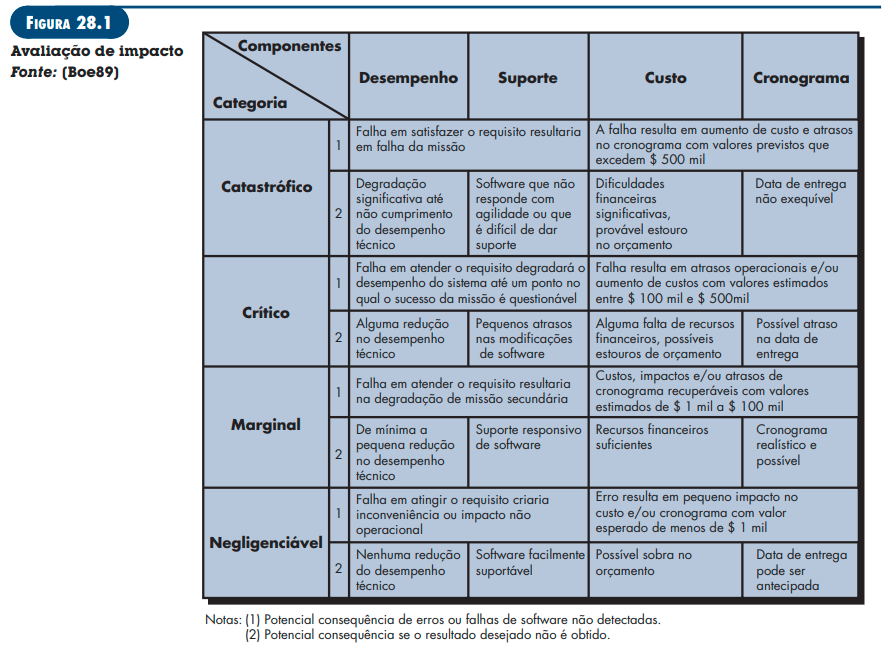
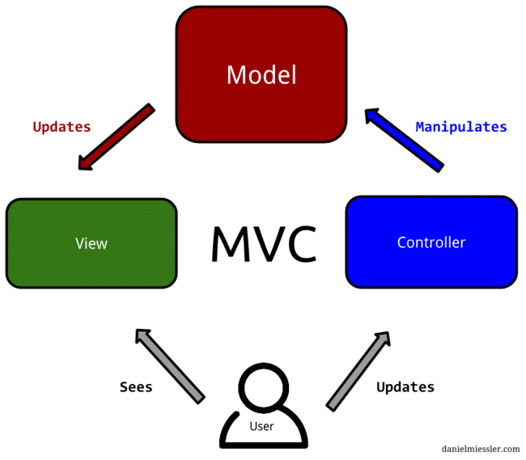

VISÃO DO PRODUTO E PROJETO
Historico de revisão
| Data | Versão | Descrição | Autor |
|---|---|---|---|
| 26/10 | 1.0 | Criação do documento | Gian, Giulia, Helder, Júlio e Silas |
| 02/11 | 1.1 | Atualização do documento | Gian, Giulia, Helder, Júlio e Silas |
| 09/11 | 1.1 | Atualização do documento | Giulia, Helder e Silas |
| 10/11 | 1.0 | Criação do GitPages | Júlio |
| 14/11 | 1.2 | Atualização do documento | Eduarda, Gian, Giulia, Helder, Júlio e Silas |
| 15/11 | 1.0 | Criação do Read.Me | Giulia |
| 15/11 | 1.1 | Atualização do GitPages | Júlio |
| 16/11 | 1.2 | Gravação do Vídeo da Unidade 1 | Helder, Silas |
| 16/11 | 1.3 | Atualização do Documento | Gian, Giulia, Helder, Júlio e Silas |
| 30/11 | 1.0 | Configuração do ambiente | Giulia, Júlio e Silas |
| 01/12 | 1.1 | Criação das pastas de back-end e front-end | Giulia, Júlio e Silas |
| 02/12 | 1.0 | Criação do Documento de Backlog | Gian, Giulia, Júlio e Silas |
| 06/12 | 1.3 | Atualização do Documento | Eduarda, Gian, Giulia, Helder, Júlio |
| 07/12 | 1.4 | Atualização do Documento | Eduarda, Gian, Giulia, Helder, Júlio e Silas |
1 VISÃO GERAL DO PRODUTO
1.1 Declaração de Posição do Produto
| Para | Alunos e Professores da FGA |
|---|---|
| Quem | Deseja postar suas dúvidas, sabendo que serão vistas por outros alunos e respondidas sequencialmente, caso saibam as soluções. |
| O Dubium | É um sistema de auxílio acadêmico |
| Que | Auxílio no acesso do esclarecimento de dúvidas dentro de múltiplos conteúdos e no agendamento de prestações de ajuda presencial |
| Ao contrário | Stack Overflow, Brainly |
| Nosso produto | Possuirá um acesso a aplicação por meio de cadastro dos alunos da UnB, sendo gratuito e mais direcionado a resolução de dúvidas acadêmicas específicas. Também, através de uma gamificação, irá incentivar os alunos a auxiliarem a usarem-no e se sentirem mais motivados para ajudarem os outros. |
1.2 Objetivos do Produto
O objetivo do Dubium é ajudar / dar suporte para a resolução de dúvidas específicas de alunos, provendo agendamentos de reuniões presenciais, se for do desejo dos solicitantes, ou simplesmente solucioná-las via fórum. Além de ajudar professores a perceberem o maior foco de dificuldade em suas matérias, fazendo-os melhorar o planejamento de conteúdos complexos.
1.3 Tecnologias a Serem Utilizadas
- JavaScript
- Typescript
- MySQL
- NodeJS
- NestJS
- Material UI
- React
- Jest
2 VISÃO GERAL DO PROJETO
2.1 Organização do Projeto
| Papel | Atribuições | Responsável | Participantes |
|---|---|---|---|
| Desenvolvedor | Codificar o produto, codificar testes unitários, realizar refatoração | Helder | Eduarda, Gian, Giulia, Julio, Silas |
| Dono do Produto | Atualizar o escopo do produto, organizar o escopo das sprints, validar as entregas | Gian | Eduarda, Giulia, Helder, Julio, Silas |
| Analista de Qualidade | Garantir a qualidade do produto, garantir o cumprimento do conceito de pronto, realizar inspeções de código | Silas | Eduarda, Gian, Giulia, Helder, Julio |
| Mestre do Scrum | Delegar tarefas, duração da sprint e sprint review | Giulia | Eduarda, Gian, Helder, Julio, Silas |
2.2 Planejamento das Fases e/ou Iterações do Projeto
| Sprint | Produto (Entrega) | Data Início | Data Fim |
|---|---|---|---|
| Sprint 1 | Produto definido | 25/10/22 | 30/10/22 |
| Sprint 2 | Produto Alinhado | 30/10/22 | 07/11/22 |
| Sprint 3 | Análise Visão de Produto e Projeto | 07/11/22 | 14/11/22 |
| Sprint 4 | Visão de Produto e Projeto finalizado | 14/11/22 | 21/11/22 |
| Sprint 5 | Ambiente configurado no VSCode com React, Material UI e Nest, ambiente testado, reunião de comunicação sobre as tecnologias | 21/11/22 | 30/11/22 |
| Sprint 6 | Backlog do Produto, CI/CD configurados, escopo dos MVPs 1 e 2 definidos | 30/11/22 | 07/12/22 |
| Sprint 7 | Backlog da sprint refinado, protótipo do projeto aprovado | 07/12/22 | 13/12/22 |
| Sprint 8 | MVP-1 validado | 27/12/22 | 03/01/22 |
| Sprint 9 | MVP-1 finalizado | 03/01/22 | 10/01/22 |
| Sprint 10 | MVP-2 validado | 24/01/22 | 31/01/22 |
| Sprint 11 | MVP-2 finalizado | 31/01/22 | 07/02/22 |
2.3 Matriz de Comunicação
| Descrição | Área/Envolvidos | Periodicidade | Produtos Gerados |
|---|---|---|---|
| Daily | Equipe do Projeto | Diário | Relato por parte dos membros da equipe no telegram sobre o andamento individual das partes do projeto |
| Sprint Planning | Equipe do Projeto e Cliente | Semanal | Relatório Sprint Planning, Planejamento do que será feito no ciclo da Sprint |
| Sprint Review | Equipe do Projeto e Cliente | Junto ao Sprint Planning | Relatório Sprint Review, Validação do Produto |
| Retrospectiva | Equipe do Projeto | Quinzenalmente | Tabela de check com uma verificação da implementação dos requisitos não funcionais |
| Comunicar a situação do projeto | Equipe do Projeto e Professor | Mensalmente | Apresentações da Entrega de cada Unidade |
2.4 Gerenciamento de Riscos
A análise e gerenciamento de riscos referem-se à identificação dos possíveis pontos que podem representar riscos para o projeto. Precisam ser acompanhados, a cada sprint, se referindo assim, ao projeto como um todo e não apenas ao produto.
Segundo Charette, existem três tipos de riscos de Software (PRESSMAN,2006): Riscos de projeto mostram problemas potenciais de orçamento, cronograma, organizacionais que impactam o projeto. (PRESSMAN,2006) Riscos técnicos perturbam a qualidade e a entrega do software. Também mostram problemas potenciais de projeto, implementação, interface, verificação e manutenção. (PRESSMAN,2006) Riscos de negócio ameaçam a viabilidade do software e do produto. Existem cinco principais riscos de negócios que são: (1) criar um excelente produto ou sistema que ninguém realmente quer (risco de mercado), (2) criar um produto que não se encaixe mais na estratégia geral de negócios da empresa (risco estratégico), (3) criar um produto que a equipe de vendas não sabe como vender (risco de vendas), (4) perda de suporte da alta gerência devido à mudança no foco ou mudança de profissionais (risco gerencial), e (5)perda do orçamento ou do comprometimento dos profissionais (riscos de orçamento). (PRESSMAN,2006)

2.4.1 Histórico de Riscos
| Sprint | Risco Encontrado | Nível |
|---|---|---|
| 3 | Adição de um novo membro na equipe | Negligenciável |
2.5 Critérios de Replanejamento
Os critérios de replanejamento referem-se à identificação dos pontos que, se ocorrerem, necessariamente, vão causar um replanejamento do projeto. Precisam ser acompanhados a cada sprint, se referindo assim, ao projeto como um todo e não apenas ao produto.
- Entrada de um novo membro na equipe
| Sprint | Solução Encontrada | Resultado Esperado |
|---|---|---|
| 3 | Explicações sobre o projeto e nova divisão de tarefas | Capacitação da Equipe |
Os critérios de replanejamento do projeto devem ser acompanhados e atualizados a cada ciclo. E, aplicados, conforme necessidade.
3 PROCESSO DE DESENVOLVIMENTO DE SOFTWARE
3.1 Metodologia
Baseado na proposta do Sommerville (2018), foi respondido um conjunto de questões distintas para definir a abordagem que melhor se encaixa ao projeto e time.
Questões técnicas:
- Qual é o tamanho do sistema que está sendo desenvolvido? É um software de pequeno porte.
- Que tipo de sistema está sendo desenvolvido? Aplicação Web.
- O sistema está sujeito a controle externo? Sim.
Questões organizacionais:
- É importante ter uma especificação e um projeto (design) bem detalhados antes de passar para a implementação - talvez por motivos contratuais? Como será utilizada uma metodologia de design orientado à função, não tem necessidade de ser bem definida antes da implementação.
- É realista uma estratégia de entrega incremental, na qual o software é entregue aos clientes ou outros stakeholders e um rápido feedback é obtido? Por conta da proximidade do Product Owner(PO) com o cliente e a equipe de desenvolvimento, é realista.
- Os representantes do cliente estarão disponíveis e dispostos a participar do time de desenvolvimento? Sim, uma vez que o representante faz parte da equipe.
- Existem questões culturais que possam afetar o desenvolvimento do sistema? Não.
Considerando os resultados obtidos e as necessidades da equipe em priorizar a flexibilidade e o desenvolvimento iterativo, escolheu-se a metodologia ágil. Dessa forma, a abordagem SCRUM foi adotada como ciclo de vida e processo de desenvolvimento baseado no XP - Extreme programming - assim como pelos seguintes motivos:
- Feedback contínuo do cliente
- Equipe pequena
- Construção dos requisitos que, junto com o software, permitem qualquer mudança necessária a ser feita sem prejudicar o desenvolvimento da aplicação
- Realização do controle das atividades da sprint
- Atua de maneira evolutiva, com refinamentos sucessivos de requisitos e solução
- Método de Pair Programming
3.2 Ferramentas
Para a execução dessa metodologia, escolheu-se as seguintes Ferramentas de organização e controle da equipe:
- Trello - para controle e gerenciamento dos resultados das sprints
- Figma - para protótipos do front-end
- Miro - para gerenciamento de ideias
3.3 Processos e Procedimentos
De acordo com a abordagem SCRUM, definiu-se:
- Sprint: com duração de 1 semana;
- Dailys: ao fim do dia;
- Backlog do Produto e da Sprint: definidos em cada Planning;
- Planning: realizada no primeiro dia de cada sprint;
- Review: ao final de cada ciclo para validar os requisitos com o Product Owner e com o cliente.
- Retrospectiva: ao final de cada ciclo, para a verificar a qualidade interna do produto e da equipe;
- Entrega: finalização de cada parte do produto em releases do github.
- Implementação: codificação - modelagem de banco de dados, programação back-end e front-end, criação de cenários de testes e documentação dos requisitos
- Codificação: A codificação é composta pelas seguintes partes:
- Implementação do banco de dados: Será feito um pareamento entre dois membros da equipe que utilizaram o MySQL e ferramentas de modelagem para implementar a tarefa a ser feita.
- Implementação do front-end: Será feito um pareamento entre dois membros da equipe que utilizaram o framework React e a ferramenta Figma para implementar a tarefa a ser feita.
- Implementação do back-end: Será feito um pareamento entre dois membros da equipe que utilizaram o framework NestJS para implementar a tarefa a ser feita.
- Implementação dos testes: Os dois membros da equipe que realizaram a implementação da tarefa utilizaram a biblioteca Jest para a implementação de testes unitários referente ao código desenvolvido.
- Codificação: A codificação é composta pelas seguintes partes:
- As entregas da Implementação do front-end, back-end e testes serão códigos disponibilizados no GitHub, o protótipo será entregue no Figma e o banco de dados serão entregues scripts.
3.3.1 PLANEJAMENTO
3.3.1.1 ELICITAÇÃO DE REQUISITOS
| Identificador | Atividade | Método | Ferramenta | Entrega |
|---|---|---|---|---|
| ELI-01 | Definição do Produto e do Projeto | Reunião em grupo e estudo/análise individual | Google Meets | Documento de Visão do Produto e do Projeto no Pages |
| ELI-02 | Identificação de Requisitos | Reunião de grupo e brainstorm | Google Meets; Miro | Backlog do Produto |
| ELI-03 | identificação de necessidades dos stakeholders | Questionário | Google Forms | Necessidades e desejos dos stakeholders |
| ELI-04 | Estruturação do conjunto de requisitos em grupos coerentes | Agrupando por temas coerentes | Google Meets; Miro | Conjunto de requisitos estruturados por tema |
3.3.1.2 ANÁLISE E NEGOCIAÇÃO DE REQUISITOS
| Identificador | Atividade | Método | Ferramenta | Entrega |
|---|---|---|---|---|
| ANA-01 | Priorização e negociação dos requisitos | Reunião em grupo e brainstorm | Google Meets; Miro | MVP1 MVP2 |
| ANA-02 | Refinamento dos requisitos | Reunião semanal em grupo junto ao cliente (Sprint Planning) e de forma assíncrona pelo (dono do produto e demais participantes) | Google Meets; Miro | Backlog da sprint |
3.3.2 EXECUÇÃO
3.3.2.1 GERENCIAMENTO DE REQUISITOS
| Identificador | Atividade | Método | Ferramenta | Entrega |
|---|---|---|---|---|
| GEREN-01 | Organização dos requisitos | Framework de organização SAFe | Miro | Backlog do produto organizado na estrutura do SAFe |
| GEREN-02 | Delegação de requisitos dentro do time de desenvolvedores | Atribuição de issues no github referentes aos requisitos do backlog da sprint | Google Meets; Github; Trello | Issues referentes aos requisitos da sprint para o time de desenvolvedores |
| GEREN-03 | Realizar a rastreabilidade dos requisitos | Adicionar a rastreabilidade nos IDs dos requisitos, tanto no Github | Google Meets Github; Trello | Issues e requisitos relacionamos e rastreáveis |
3.3.3 VALIDAÇÃO
3.3.3.1 VERIFICAÇÃO E VALIDAÇÃO DE REQUISITOS
| Identificador | Atividade | Método | Ferramenta | Entrega |
|---|---|---|---|---|
| VER/VAL-01 | Validação das User Stories | Reunião semanal em grupo junto ao cliente (sprint review) para validar os requisitos do backlog da sprint | Google Meets; Miro; Github | Validação dos requisitos da sprint |
| VER/VAL-02 | Verificação da implementação dos requisitos | Reunião quinzenal em grupo junto (retrospectiva) para validar os requisitos do backlog da sprint | google Meets; Github | Verificação das implementação dos requisitos |
3.3.4 ENTREGA
3.3.4.1 DOCUMENTAÇÃO DE REQUISITOS
| Identificador | Atividade | Método | Ferramenta | Entrega |
|---|---|---|---|---|
| DOC-01 | Registro dos requisitos do produto | Transcrição do backlog de produto para o Git Pages | Git Pages; Miro; Google Meets | Documentação do backlog do produto no Git Pages |
| DOC-02 | Registro do refinamento do backlog da sprint | Transcrição semanal do backlog da sprint para o Git Pages | Git Pages; Miro; Google Meets | Documentação do backlog da sprint no Git Pages |
3.4 Arquitetura do Projeto
Com base na escolha de frameworks e foca na visualização e organização do projeto, definiu-se a escolha da aplicação MVC (Model-View-Controller), que é um padrão de arquitetura dividido logicamente em três partes:
- Model: Gerenciamento e controle de dados por meio de funções lógicas e regras de negócios;
- View: Apresentação de informações de forma visual ao usuário;
- Controller: Intermédio entre as requisições feitas pela camada View e as respostas oferecidas pela camada Model;

4 LIÇÕES APRENDIDAS
Unidade 1
- Contatar um cliente
- Organização e comunicação entre uma equipe de projeto
- Criar uma documentação de um projeto a partir de um produto
Unidade 2
- Definir prioridade e necessidades de um produto
- Transcrever ideias e funcionalidades em requisitos
- Elicitar requisitos
- Abrir um canal de comunicação contínuo com o cliente
5 A MELHORAR
Unidade 1
- Demora para solucionar dificuldades
- Organização para trabalhar em grupo
Unidade 2
- Gestão de tempo e tarefas
- Comunicação da equipe com relação a reuniões e imprevistos
6 REFERÊNCIAS BIBLIOGRÁFICAS
- https://www.atlassian.com/br/agile/scrum/roles#:~: texto%20 Scrum%20 tem%20 tr%C3%AAs%20 pap%C3%A9is,membros%20da%20 equipe%20de%20desenvolvimento.
- https://www.lewagon.com/pt-BR/blog/o-que-e-padrao-mvc
- Sommerville, I. and Sawyer, P. (1997) Requirements Engineering: A Good Practice Guide. John Wiley & Sons, Inc., Hoboken
- PPRESSMAN, R S. Engenharia de Software. 6.ed. São Paulo: Mc Graw Hill Internacional, 2006